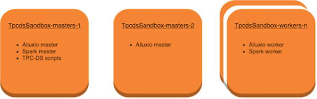
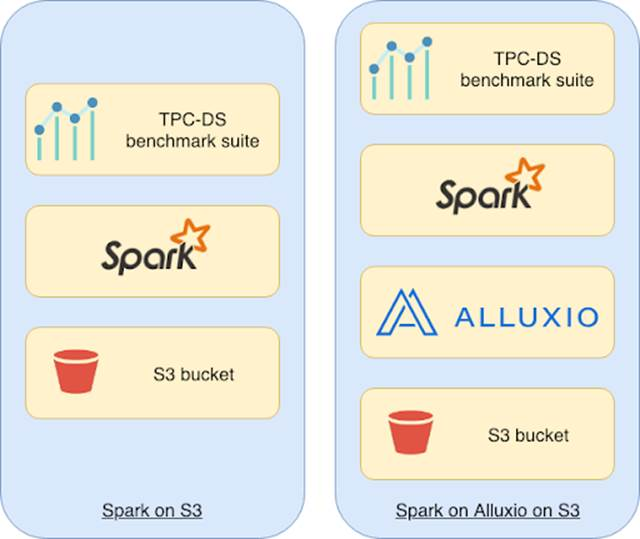
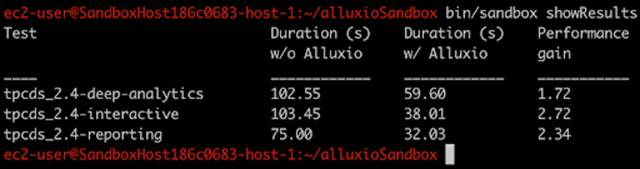
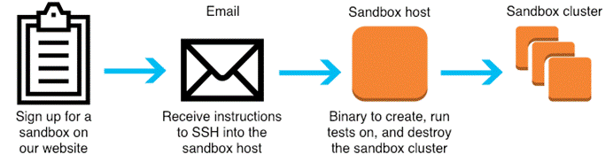

基于AWS一键部署运行Spark + Alluxio + S3技术栈与TPC-DS查询基准测试
Alluxio技术博客翻译系列——One Click to Benchmark Spark + Alluxio + S3 Stack with TPC-DS queries on AWS
本文也会发布在微信公众号“Alluxio”上，欢迎关注该微信公众号。
Spark+Alluxio+S3组合是当前非常流行的数据分析技术栈。Alluxio沙盒 (sandbox)技术是对部署在公有云环境多节点集群上的Spark+Alluxio+S3组合进行测试的最简单方法。沙盒集群已经完成全部配置，可供用户运行从hello-world示例程序到TPC-DS基准测试套件 (TPC-DS benchmark suite)的各种应用程序。实践出真知，您可以实际运行基准测试，切身体验Spark作业在S3上基于Alluxio接口运行相比直接在S3上运行的性能优势。您可以非常轻松地免费申请并启动Alluxio沙盒集群任意使用24小时。
沙盒集群的详细信息
我们提供的沙盒集群由2个主节点和4个工作节点组成 ，每个节点使用r4.2xlarge EC2实例。目前使用1.8.1版本的Alluxio，并使用S3 bucket作为其底层文件存储。它以高可用性模式部署，具有主Alluxio Master 和后备Alluxio Master。为了运行TPC-DS基准测试，Spark的Master部署安装在第一个集群主节点上，集群的每个工作节点安装部署一个Spark Worker。请注意，Spark Worker与Alluxio Worker需要同置(co-locate)部署，从而能够有机会利用Alluxio本地内存文件系统提供的数据本地性。

性能基准测试
TPC-DS是工业界标准基准测试套件，用于衡量不同系统在源自实际场景的工作负载上的性能。我们按照Databricks在此博客文章中进行的实验，运行了3组查询：交互(interactive)、报告(reporting)和深度分析(deep analytics)；结果指标是累积运行时间。作为创建沙盒集群的一部分，我们需要预先生成26GB的数据集并将其复制到新的S3 bucket。

我们首先运行了Spark on S3实验来生成基线(baseline)。在Spark on S3中，我们直接使用S3 bucket作为输入和输出目录运行基准测试程序。
在运行Spark on Alluxio on S3时，我们将数据集预加载到Alluxio中，这使得数据集在Alluxio worker中有了一份副本。这模拟了Alluxio提供的存储能够使得计算具有本地化，并且数据被预热的情景。这也是Alluxio 典型的部署方式。
Spark on Alluxio on S3运行基准测试使用了Alluxio URI作为输入和输出目录。下面是Spark on S3和Spark on Alluxio on S3两种运行的示例输出：

结果分析
我们能够看到，通过使用Alluxio为计算节点提供数据本地性，上述运行的基准测试通常会有45％到300％的性能提升，具体提升程度取决于每天具体运行的时刻（在云上运行）。这仅仅是在AWS上运行该技术栈时的性能提升效果；对于混合云场景，例如Spark和Alluxio部署在AWS上，并使用来自本地部署的HDFS集群的数据。这种情况下，性能提升可能更大，具体提升程度取决于本地部署的存储集群与公共云之间的网络带宽速度。我们听到一系列来自开源社区用户反馈的提升数值，最多的可提升10倍。
如果能够将分析型应用和机器学习工作负载提高50％，即可产生巨大影响。一方面可以降低计算资源的成本，另一方面又可以提高数据分析师的工作效率，使他们能够运行更多的报告或开发更多的模型。举个例子，在这次运行中，我们看到没有Alluxio的3次运行的总时间是281秒，而使用Alluxio运行的总时间是129.64秒，从而相当于2.17倍的总性能提升。这种时间节约意味着计算资源可以更快地减少，从而降低投入成本。
快来获得你的沙盒！

在我们的网站注册登记后，您将收到一封电子邮件，其中包含SSH到EC2实例的具体说明。在此实例中，通过一个可以发出创建集群、运行测试和销毁集群命令的二进制文件，您可以灵活地操作沙盒集群，任意SSH到集群，编辑配置或重新启动进程；您始终可以销毁并重新创建集群以恢复其初始状态。请注意，因为Alluxio需要会承担EC2实例的维护成本，所以目前沙盒集群的体验仅在24小时内可用。
欢迎您的反馈
我们欢迎更多用户熟悉Spark和S3的沙盒技术栈。事实上，这只是Alluxio可以使用的众多技术组合中的一种。如果您希望使用其他计算框架和/或存储系统来观察不同沙盒技术栈的情况，我们很乐意听取您的意见。您可以通过info@alluxio.com联系我们；我们非常感谢任何关于沙盒的反馈意见，谢谢。